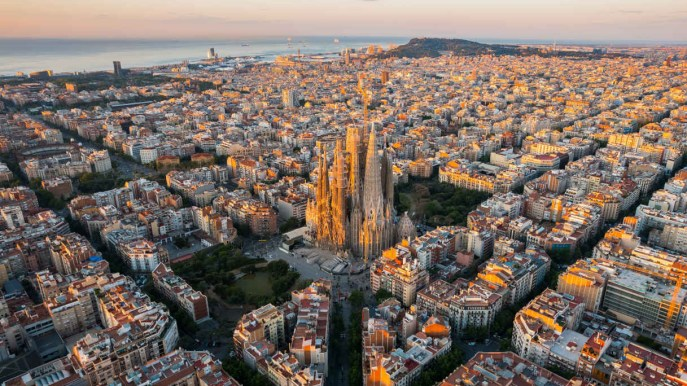

LA CITTA' DI BARCELLONA
Barcellona, è il capoluogo della Spagna e della Comunità autonoma della Catalogna.
È situata in una limitata pianura costiera al nord dello stato spagnolo, tra i fiumi Llobregat e Besós, ai piedi della catena costiera catalana.
È la seconda città spagnola per numero di abitanti e il principale centro commerciale, finanaziario ed editoriale del paese.

Cosa si può visitare
sagrada familia: monumento simbolo della città, è una chiesa progettata da A. Gaudì ma ancora incompleta,
la sua costruzione sta infatti procedendo secondo il progetto originale